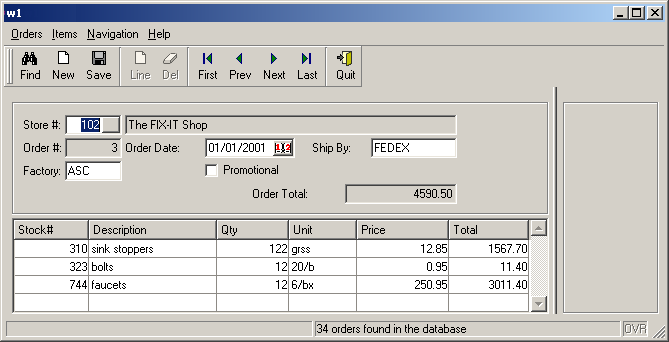

Summary:
The example discussed in this chapter is designed for the input of order information (headers and order lines), illustrating a typical master-detail relationship. The form used by the example contains fields from both the orders and items tables in the custdemo database. The result is very similar to the example of chapter 11. However, in this program the end user can input order and items data simultaneously, because the form is driven by a DIALOG instruction.
When the program starts, the existing rows from the orders and items tables have already been retrieved and are displayed on the form. The user can browse through the orders and items to update or delete them, add new orders or items, and search for specific orders by entering criteria in the form.

There are different ways to implement a Master/Detail form with multiple dialogs. This chapter shows one of them. Genero provides the basics bricks, then it's up to you to adapt the programming pattern, according to the ergonomics you want to expose to the end user.
The custlist.per form defines a typical 'zoom' form with a filter field and record list where the user can pick an element to be used in a field of the main form. Using this form, the user can scroll through the list to pick a store, or can enter query criteria to filter the list prior to picking.
The fields that make up the columns of the table that display the list are defined as FORMONLY fields. When TYPE is not defined, the default data type for FORMONLY fields is CHAR.
| Form custlist.per |
|
001 defines the database
schema to be used by this form.003 thru 018 define
a LAYOUT section
that describes the layout of the form.
020 thru 022 define
a TABLES section to
reference database schema tables.024 thru 031 define
an ATTRIBUTES section
with the details of form fields.
026 defines the query field
with a reference to the customer.store_name database
column.027 defines the BUTTON
that will fire the database query.028 thru 030 define
the columns of the table with the FORMONLY prefix.033 thru 035 define
an INSTRUCTIONS
section to group item fields in a screen array.The custlist.4gl module defines a 'zoom' module, to let the user select a customer from a list. The module could be re-used for any application that requires the user to select a customer from a list.
This module uses the custlist.per form and is implemented with a DIALOG instruction defining a CONSTRUCT sub-dialog and a DISPLAY ARRAY sub-dialog. The display_custlist() function in this module returns the customer id and the name.
In the application illustrated in this chapter, the main module orders.4gl will call the display_custlist() function to retrieve a customer selected by the user.
01ON ACTION zoom102CALL display_custlist() RETURNING id, name03IF (id > 0) THEN04...
Here is the complete source code of the custlist.4gl module:
| Module custlist.4gl |
|
001 defines the database
schema to be used by this module.003 thru 007 define
the cust_t TYPE as a RECORD
with three members declared with a LIKE
reference to the database column.009 defines the cust_arr
program array with the type defined in
previous lines.011 thru 029 define
the custlist_fill() function which fills cust_arr with
the values of database rows.
016 thru 020 declare
the custlist_curs SQL cursor
by using the where_clause condition passed as the parameter.022 thru 027 fetch
the database rows into cust_arr. 031 thru 074 implement
the display_custlist() function to be called by the main module.
040 and 041 initialize
the ret_num and ret_name variables. If the user
cancels the dialog, the function will return these values to let
the caller decide what to do. 043 thru 068 define
a DIALOG instruction
implementing the controller of the form.
045 thru 046 define
the CONSTRUCT
sub-dialog controlling the customer.store_name
query field.048 thru 049 define
the DISPLAY
ARRAY sub-dialog controlling the sa_cust screen
array.051 thru 052 implement
the BEFORE
DIALOG trigger, to fill the list with an initial result
set by passing the query criteria as "1 =1" to the
cust_list_fill function.054 thru 055 implement
the fetch ON
ACTION trigger, executed when the user presses the fe
button in the form, to fill the list with a result set
by passing the query criteria in where_clause
to the cust_list_fill function.057 thru 063 implement
the accept ON
ACTION trigger, executed when the user validates the
dialog with the OK button or with a double-click in a row of
the list. The code initializes the return values ret_num
and ret_name with the current row.065 thru 066 implement
the cancel ON
ACTION trigger, to leave the dialog when the user hits
the Cancel button.072 returns the values of
the ret_num and ret_name variables.The form specification file orderform.per defines a form for the orders program, and displays fields containing the values of a single order from the orders table. The name of the store is retrieved from the customer table, using the column store_num, and displayed.
A screen array displays the associated rows from the items table. Although order_num is also one of the fields in the items table, it does not have to be included in the screen array or in the screen record, since the order number will be the same for all the items displayed for a given order. For each item displayed in the screen array, the values in the description and unit columns from the stock table are also displayed.
The values in FORMONLY fields are not retrieved from a database; they are calculated by the BDL program based on the entries in other fields. In this form FORMONLY fields are used to display the calculations made by the BDL program for item line totals and the order total. Their data type is defined as DECIMAL.
This form uses some of the attributes that can be assigned to fields in a form. See Form Specification Files Attributes for a complete list of the available attributes.
The form defines a toolbar and a topmenu. The decoration of toolbar or topmenu action views is centralized in an Action Defaults section.
| Form orderform.per |
|
001 defines the database
schema to be used by this form.003 thru 014 define
a ACTION
DEFAULTS section
with view defaults such as text and comments.016 thru 037 define
a TOPMENU section
for a pull-down menu.039 thru 053 define
a TOOLBAR section
for a typical toolbar.055 thru 077 define
a LAYOUT section
that describes the layout of the form.079 thru 081 define
a TABLES section to
list all the database schema tables that are referenced for
fields in the ATTRIBUTES section of the form.083 thru 099 define
an ATTRIBUTES section
with the details of form fields.084 and
092 define BUTTONEDIT fields, with buttons that allow the
user to trigger actions defined in the .4gl module.101 thru 110 define
an INSTRUCTIONS section
to group item fields in a screen array.The orders.4gl source implements the main form controller. Most of the functionality has been described in previous chapters. In this section we will only focus on the DIALOG instruction programming. The program implements a DIALOG instruction, including an INPUT BY NAME sub-dialog for the order fields input, and an INPUT ARRAY sub-dialog for the items input.
Unlike traditional 4GL programs using singular dialogs, you typically start the program in the multiple dialog instruction, eliminating the global MENU instruction.
The module variables listed below are used by the orders.4gl module.
| Module variables of orders.4gl |
|
001 defines the database
schema to be used by this module.003 thru 010 define
the order_t TYPE as a RECORD
with six members declared with a LIKE
reference to the database column. This type will be used for the
order records.011 thru 018 define
the item_t TYPE as a RECORD
to be used for the item records.020 defines the order_rec
variable, to hold the data of the current order header.
021 defines the arr_ordnums
array, to hold the list of order numbers fetched from the last
query. This array will be used to navigate in the current list of
orders.
022 defines the orders_index
variable, defining the current order in the arr_ordnums
array.
023 defines the arr_items
array with the item_t type, to hold the lines of the current
order.
024 defines the order_total
variable, containing the order amount.
026 thru 047 define
string constants with text messages
used by the orders.4gl module.
049 thru 052 define
numeric constants used for the order_move()
navigation function.
This is the most important function of the program. It implements the multiple dialog instruction to control order and items input simultaneously.
The function uses the opflag variable to determine the state of the operations for items:
| Function orditems_dialog (orders.4gl) |
|
002 thru 006 define
the variables used by this function. Other module variables are used
by the function008 thru 143 define
a DIALOG instruction implementing
the controller of the form.
010 thru 053 implement
the INPUT BY NAME
sub-dialog, controlling the order_rec record input.013 thru 015 implement
the find ON
ACTION trigger, to execute a Query
By Example with the order_query() function.017 thru 021 implement
the new ON
ACTION trigger, to create a new order record.023 thru 024 implement
the save ON
ACTION trigger, to validate and save current modifications
in the order record
with the order_update() function.026 thru 027 declare
the ON CHANGE trigger
for the store_num field, to check if the number is a
valid store identifier with the order_check_store_num()
function. If the function returns FALSE, we execute
a NEXT FIELD
to stay in the field.029 thru 035 implement
the zoom1 ON
ACTION trigger for the f01 field, to open a typical
"zoom" window with the display_custlist()
function. Note that if the user selects a customer from the
list, we mark the field as touched with the DIALOG.setFieldTouched()
method. This simulates a real user input.037 thru 038 implement
the AFTER INPUT trigger,
to validate and save current modifications with the order_update()
function when the focus is lost by the order header
sub-dialog.040 thru 051 implement
the ON
ACTION triggers for the four navigation actions to move in
the order list with the order_move() function.055 thru 130 implement
the INPUT ARRAY
sub-dialog, controlling the arr_items array input.058 thru 059 implement
the BEFORE
INPUT trigger, to display information message to the user,
indicating that item row data will be validated and saved in the
database when the user moves to another row or when the focus is lost by
the item list.061 thru 064 implement
the BEFORE ROW trigger,
initialize the opflag operation flag to "N" (no
current operation), save the current row index in curr_pa
variable and disable the stock_num field (only editable
when creating a new line).066 thru 069 implement
the BEFORE
INSERT trigger, to set the opflag to
"T" (meaning temporary
row was created). A row will be fully validated and
ready for SQL INSERT when we reach the AFTER INSERT
trigger, there we will set opflag to "I".
The code initializes the quantity to 1 and enables the stock_num
field for user input.071 thru 072 implement
the AFTER
INSERT trigger, to set the opflag to
"I" (row insertion done in list). Data is now
ready to be inserted in the database. This is done in the AFTER
ROW trigger, according to opflag. 074 thru 079 implement
the BEFORE
DELETE trigger. We execute the SQL DELETE only if opflag
equals "N", indicating that we are in a normal
browse mode (and not inserting a new temporary row, which
can be deleted from the list without any associated SQL
instruction).081 thru 082 implement
the AFTER
DELETE trigger, to reset the opflag to
"N" (no current operation). This is done to clean
the flag after deleting a new inserted row, when data
validation or SQL insert failed in AFTER ROW. In that
case, opflag equals "I" in the next AFTER
DELETE / AFTER ROW sequence and would fire
validation rules again.084 thru 085 implement
the ON ROW
CHANGE trigger, to set the opflag to
"M" (row was modified), but only if we are not
currently doing a row insertion: Row insertion can have
failed in AFTER ROW and AFTER INSERT would not be executed
again, but ON ROW CHANGE would. The real SQL
UPDATE will be done later in AFTER ROW.087 thru 099 implement
the AFTER ROW trigger,
executing INSERT or UPDATE SQL instructions according to the
opflag flag. If the SQL statement fails (for example,
because a constraint is violated), we set the focus back to
the current field with NEXT
FIELD CURRENT and keep the opflag value as is. If
the SQL instruction succeeds, opflag will be reset to
"N" in the next BEFORE ROW.101 thru 103 implement
the zoom2 ON ACTION trigger for the f08
field, to open a typical "zoom" window with the display_stocklist()
function. Note that if the user selects a stock from the
list, we mark the field as touched with the DIALOG.setFieldTouched()
method. This simulates a real user input.112 thru 120 declare
the ON CHANGE trigger
for the stock_num field, to check if the number is a
valid stock identifier with the get_stock_info()
lookup function. If the function returns FALSE, we
execute a NEXT
FIELD to stay in the field, otherwise we re-calculate
the line total with items_line_total().122 thru 128 declare
the ON CHANGE trigger
for the quantity field, to check if the value is
greater than zero. If the value is invalid, we execute a NEXT
FIELD to stay in the field, otherwise we re-calculate
the line total with items_line_total().132 thru 134 implement
the BEFORE
DIALOG trigger, to fill the list of orders with an initial result set.137 thru 138 implement
the about ON
ACTION trigger, to display a message box with the version of
the program.140 thru 141 implement
the quit ON
ACTION trigger, to leave the dialog (and quit the program).This function validates that the values in the order_rec program record are correct, and then executes an SQL statement to update the row in the orders database table.
| Function order_update (orders.4gl) |
|
01 Since you cannot use the DIALOG keyword outside
the DIALOG statement, a dialog object is passed to this function in order to
use the methods of the DIALOG class.04 calls the order_validate function, passing the
dialog object. If the fields in the dialog are not validated, the
function returns without updating the database row.06 thru
14 execute the SQL statement to
update a row in
the orders database table using values from the order_rec program record.16 thru18 return an
error and exits the function if the SQLCA.SQLCODE indicates the database
update was not successful.21 resets the
touched flags of the fields in the
orders screen record, after the database is successfully updated, to get back to the initial
state of the dialog. 22 displays a message to the user indicating the
database update was successful.24 returns TRUE to the calling function if the
database update was successful. This function inserts a new row in the database table orders, using the values from the order_rec program record.
| Function order_new (orders.4gl) |
|
02 thru 07 add the next
unused order number to the order_num field of the order_rec program record, based
on the existing order numbers in the orders database table.08 thru 13
set the order
total to zero, and add default values to some order_rec fields. 15 thru 31 execute the SQL statement to
insert a new row in
the orders database table using values from the order_rec program record.32 thru
36 clear the form and display an error message if the
insert into the database table failed, and return
FALSE to the calling
function.37 inserts a new empty element into the
arr_ordnums
array at the
first position, after the successful insert into the orders table,
and sets the value of the element to
the order number of the order_rec program record. The arr_ordnums
array keeps track of the order numbers of the orders that were retrieved
from the database or newly inserted.38 39 clears the program array for
items, preparing for the addition
of items for the new order.40 displays a message indicating the insert of a new row in the
orders database table was successful.42 returns TRUE to the calling function, indicating the insert into
the orders database table was successful.This function validates the entries in the fields of the orders screen record.
| Function order_validate (orders.4gl) |
|
01 The dialog object is passed to this function,
allowing the use of methods of the DIALOG class.03 thur
05 return TRUE to the calling function if the
fields in the orders record have not been touched.06 thru
08 call the validate()
method of the dialog object to execute any
NOT NULL,
REQUIRED,
and INCLUDE validation rules defined
in the form specification file for the fields in the orders screen
record. If this validation fails, FALSE is returned to the calling function.09 thru 11 call the
order_check_store_num function to verify that the store_num value
exists in the customer database table. If this validation fails,
FALSE is returned to the calling function.12 returns TRUE to the calling function when the
validation is successful.This function allows the user to search for a specific order by entering criteria into the form (Query by Example). This CONSTRUCT statement is not a subdialog of a DIALOG statement. It is a stand-alone statement called by the action find, triggered when the user selects the corresponding menu item or toolbar icon on the form orderform.
|
Function order_query (orders.4gl)
|
|
02 defines a string variable, where_clause, to hold the
WHERE clause created from the criteria entered in the form fields by
the user.03 defines an integer variable, id, to hold the store number
selected by the user after triggering the display_cust function of
the Customer List module.05 displays a message instructing the user to enter search
criteria.08 thru
43 contain the WHILE
statement that is executed until an order is successfully selected or the
user cancels the operation.10 thru
15 specify the form fields that will contain the search
criteria for the CONSTRUCT statement.11 thru
22 define an ON ACTION clause for the zoom1 button in the
orderform form specification file. After the
user selects the desired customer from the customer list that is displayed,
the customer number and name are stored in the corresponding fields of
orderform.24 thru
25 display the message when the user selects the about
menu item on the orderform form.29 thru
42 test whether the user wants to
interrupt the dialog and
responds accordingly.31 thru
37 When the user interrupts, a message box is displayed if
the order number array is empty, allowing the user to exit the program, or
to continue. If the array is not empty, the function simply
returns.39 thru
42 when the user has not interrupted, the order_select function
is called to retrieve the order
information; then the WHILE
loop is exited.